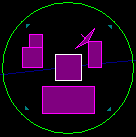
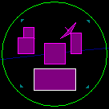
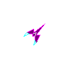
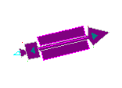

There are nine different types of units in Gravity Well; these are the vehicles and structures that make up each player's empire. The following discussion describes the role of each of these units in the game.
"Empires may come and go but the scarred planet remains."
- Premier Consulate Banin Rif - Delta Sector

The base is the first installation built on a new planet. It serves as the headquarters for the installations that follow. The base is one of the only two units that can convert raw materials produced by a colony into finished materials.The base includes a military garrison to man planetary
defense sites. Planetary defenses will automatically respond when enemy
vessels are in range. The garrison type is indicated by different colored
weapons emplacements around the planet. There are four weapon emplacements
situated around the surface of the planet.

The colony is the source of raw materials for the expansion of your empire. Colonies are the only units in the game that produce raw materials. Raw materials can be transported by freighters to other planets to construct new colonies, bases, and starbases. When all of your colonies and freighters have been destroyed, you cannot expand in the sector. Comm
centers gather electronic intelligence data and relay it to your fighter.
This provides the information necessary to maintain the radar display.
If all of your comm centers and sensor arrays are destroyed, you're radar
display will no longer display data. If the planetary garrison is equipped
with beam lasers, a comm center will increase the lasers' chance to hit.
Comm
centers gather electronic intelligence data and relay it to your fighter.
This provides the information necessary to maintain the radar display.
If all of your comm centers and sensor arrays are destroyed, you're radar
display will no longer display data. If the planetary garrison is equipped
with beam lasers, a comm center will increase the lasers' chance to hit.
 The
tech center is a planetary installation that is capable of constructing
space ships. It will automatically construct new freighters and fighters
when necessary, providing the host base has sufficient finished materials
available.
The
tech center is a planetary installation that is capable of constructing
space ships. It will automatically construct new freighters and fighters
when necessary, providing the host base has sufficient finished materials
available.
Tech Centers also assist in the development of
high technology upgrades for your fighter. All of your tech centers work
cooperatively so having more tech centers increases their chance to produce
something. When your tech centers have completed a new development, all
of them will begin to flash. Landing at a base or starbase which accompanies
a tech center will then result in the installation of the new upgrade.
When a new fighter is constructed, it is automatically fitted with any
upgrades available. If another upgrade is developed before the one prior
is fitted into your fighter, the upgrade will be installed in one of your
other ships or facilities. Beware the base equipped with guided missiles!
See Technological Developments
for information on the different upgrades available.

The Starfighter design is directly descended from the old asteroid mining ships dating back to early 21st century Earth. Historians have actually predated the design of the ship to simulations that were run on the North American continent in the latter part of the 20th century. Though the design remains similar, modifations to the gravitic drive have increased the range of the fighter giving it interstellar capability. The gravitic drive was developed by the Ch'ta whose home star is in close orbit around a black hole. The drive harnesses graviton particles which are emitted by matter. The average life of a gravitic drive is somewhere around 5000 years, but that, of course, is only theoretical. New weapons technologies that are even now being developed, are easily fitted into the existing structure of the ship. Most of the weapons that can be installed on the fighter take advantage of the gravitic drive and have unlimited ammunition. The fighter is the leader of your forces in the sector. It is the most versatile of all the units. It is also the only type of unit that the player directly controls.The number of fighters per squadron is set when the game is started. As a pilot, you are assigned one fighter. Any fighters not controlled by a human are assigned the personality type specified in the Game Setup.
In a scouting role, the fighter is used to stake a claim on new planets and to defend that claim. Doing so automatically directs friendly units to start colonizing the planet as quickly as possible. Freighters will be dispatched, when ready, to construct planetary installations and a starbase.
As an offensive weapon, the fighter is capable of destroying enemy planetary complexes so that friendly installations can be constructed on the planet. Also, enemy shipping is disrupted by intercepting freighters before they are able to construct new installations or resupply those in desperate need.
The fighter is also defends the units it leads.
The fighter's role is to defend friendly installations and vessels from
enemy attack.

Freighter is such a simple word. How can 'freighter' describe the lonely months in transit from one world to another with nothing but some old Led Zeppelin CD's and a short supply of Jovian niborg? How can 'freighter' describe the hours of back breaking toil moving weightless tons of cargo in a desparate resupply mission? How can 'freighter' describe the fear of having to cross the Great Dark between the stars with nothing but two small turrets between you and oblivion? Is it any wonder that freighter captains are a strange breed with even stranger loyalties? Freighters are your merchants, your cargo barges, your Mayflowers. The freighter is the vehicle of colonization and commerce in Gravity Well. It fulfills several needs.Primarily, the freighter is used to transport materials to new planets for the purpose of colonization. When colonizing a planet, each installation that is constructed consumes the freighter as well as its cargo. In order to construct an installation, a freighter must be completely filled with cargo. The freighter's role in colonization consists of constructing three facilities, a base, a colony, and then a starbase, in that order.Gray planets cannot be colonized so they will not build a colony but will build all other facilities.
Second, the freighter is used to resupply installations in need of raw materials. Units at a planet which does not have a colony will slowly run out of materials due to combat damage repairs. Freighters will attempt to keep these units supplied with the materials they need until a new colony is built. You'll see heavy freighter traffic to newly conquered gray planets until the planet is fully supplied. Freighters will not remain in orbit around a gray planet since it cannot resupply them without a colony. Instead they will return to a nearby green world to resupply before setting out on another mission, perhaps carrying medical supplies to a colony beset by plague. Gray planets depend on the lifeline created by your freighters to supply them with the raw materials they require. Without a good size freighter fleet, your empire cannot grow quickly. Guard them well
Freighters are equipped with two single barrel
turrets which can receive weapons upgrades. Any upgraded weapon on a freighter
that is used to make a base or starbase will be installed in the new facility.
A freighter with beam lasers makes an excellent starbase.
The Starbase is essentially an orbiting base. It provides a landing site for the fighter and is equipped with entertainment facilities for unwinding after those long missions of massive destruction. It also serves as the support structure for the space dock and sensor array units.
The Starbase includes a military garrison to man
orbital defenses. The garrison type is indicated by different colored weapons
emplacements mounted on the starbase. Orbital defenses will automatically
respond when enemy vessels are in range.
 Sensor
arrays gather electronic intelligence data and relay it to your fighter.
This provides the information required to maintain the radar display. If
all of your comm centers and sensor arrays are destroyed, you're radar
display will no longer display data. If the starbase garrison is equipped
with beam lasers, a sensor array will increase the lasers' chance to hit.
Sensor
arrays gather electronic intelligence data and relay it to your fighter.
This provides the information required to maintain the radar display. If
all of your comm centers and sensor arrays are destroyed, you're radar
display will no longer display data. If the starbase garrison is equipped
with beam lasers, a sensor array will increase the lasers' chance to hit.
 The
space dock is an orbital installation that is capable of constructing space
ships. It will automatically construct new freighters and fighters when
necessary, providing the host starbase has sufficient finished materials
available.
The
space dock is an orbital installation that is capable of constructing space
ships. It will automatically construct new freighters and fighters when
necessary, providing the host starbase has sufficient finished materials
available.
|
|
|
|